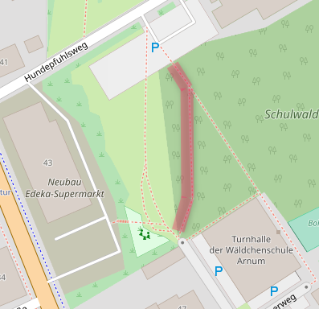
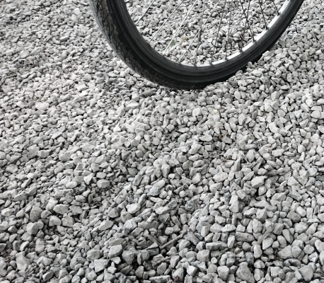
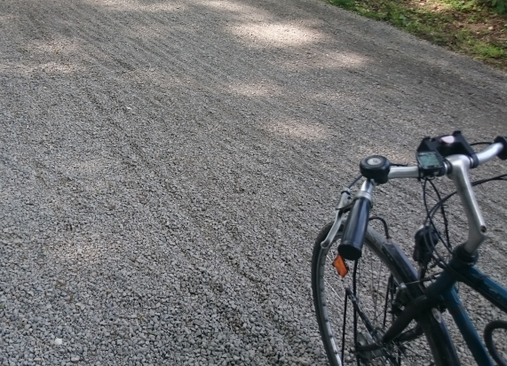

Kurzbeschreibung: Der Schotter auf dem Radweg durch den Schulwald ist sehr lose.
| Tabelle | Beschreibung |
|---|---|
| Feststelldatum | 2018-05-11-Fr |
| Autor | Jens Spille |
| Ort | Arnum - Schulwald |
| Koordinaten | 52.30577/9.73872 |
| Fahrtrichtung | beide |

 
Durch den Neubau von Edeka wurde der alte Radweg entfernt und der Weg durch den Schulwald ertüchtigt. Bei dieser Maßnahme ist eine zu dicke Schotterschicht mit gleich großer Körnung aufgetragen worden. Dadurch verkannte sich die Steinchen nicht sondern rollen aufeinandern. Fahrräder kommen leicht ins rutschen.
Ersatz durch geeigneten Schotter.
Stadt Hemmingen